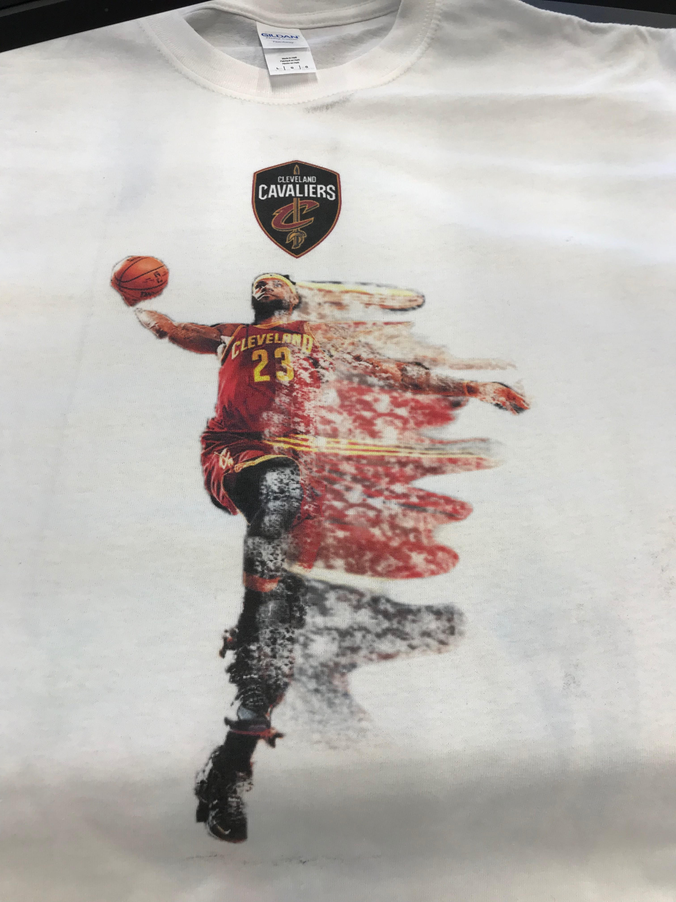

The assignment for this rotation was to use Adobe Photoshop and CorelDraw to make unique images and designs to put on different objects.
The first was a T-shirt, where I put a picture of Lebron James dunking. I first cut him out of a picture I found online. Then, I tried to create a dispersion/splatter effect using different brushes
and layers. I also put the Cavs logo above him.

Printing was very easy. I first pressed my t-shirt in order to get the wrinkles out. Then, I aligned the t-shirt in the printer and simply
plugged in the USB with my edited image into the printer and hit print. Finally, I pressed it once again and my t-shirt was finished.
The second tool we got to use was sublimation printing. I chose to do a phone case for my project. I used the iPhone 7 phonecase template on CorelDraw and put an image of a waterfall from Yosemite National Park from my summer trip. I then put my name on the bottom of the image